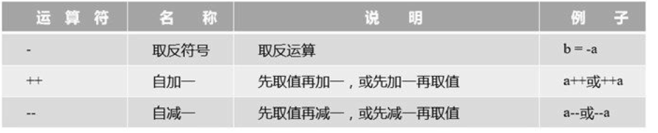
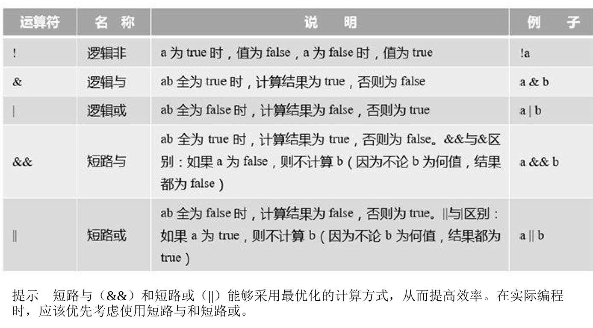
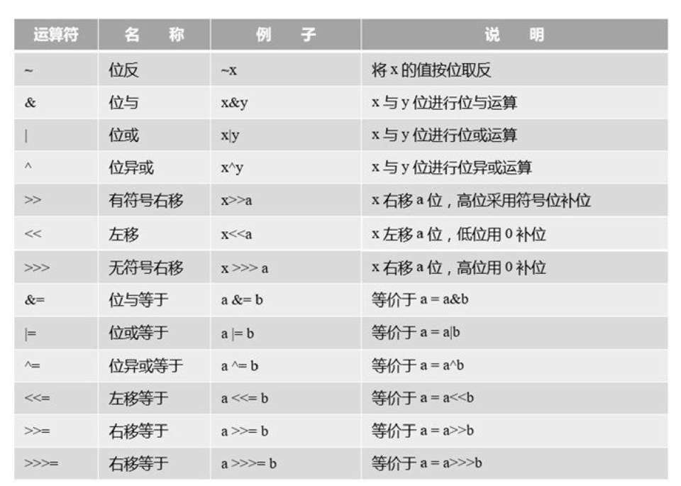
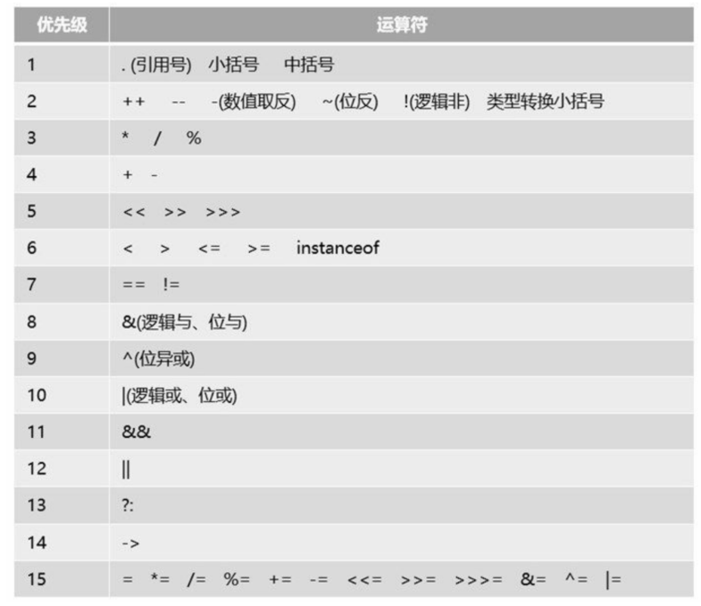

1.5. 运算符¶
JAVA中提供丰富的运算符，如：赋值运算符、算术运算符、比较运算符
1.5.1. 赋值运算符¶
赋值运算符以符合“=”表示，将右方操作数所含的值赋值给左方
eg:
int a = 100
eg:
package Number;
public class Eval {
public static void main(String[] args) {
// 声明int a、b、c
int a,b,c;
a=15;
// a与4的和赋值给b，然后在赋值给c
c=b=a+4;
System.out.println("c的值为： " + c);
System.out.println("b的值为： " + b);
}
}
说明：
在java中可以把赋值运算符连在一起使用，如： x=y=z=5; x、y、z都得到同样的值5，开发环境中不建议使用这种赋值语句
1.5.2. 算术运算符¶
一元运算符
算术一元运算符一共有3个，分别是-、++和–。

-a是对a取反运算，a++或a–是在表达式运算完后，再给a加一或减一。而++a或–a是先给a加一或减一，然后再进行表达式运算。
package com.company;
public class Main {
public static void main(String[] args) {
// write your code here
int a = 12;
System.out.println(-a); //-12
int b = a++;
System.out.println(b); //12
b =++a;
System.out.println(b); //14
}
}
二元运算符
：+、-、*、/和%，这些运算符对数值类型数据都有效.
具体说明参见如下表：
二元算术运算符
| 运算符 | 名称 | 说明 | 例子 |
|---|---|---|---|
| 加 | 求a加b的和，也可字符串拼接 | a+b | |
| 减 | 求a减去b的差 | a-b | |
| * | 乘 | 求a乘以b的积 | a*b |
| / | 除 | 求a除以b的商 | a/b |
| 取余 | 求a除以b的余数 | a%b |
eg:
package Number;
public class Arith {
// 创建类
public static void main(String[] args) {
// 主方法
// 声明float型变量并赋值
float number1=45.56f;
// 声明int变量并赋值
int number2=152;
// 开始进行运算
System.out.println("开始进行运算了.........");
System.out.println("和为：" + (number1 + number2));
System.out.println("差为：" + (number2 - number1));
System.out.println("积为：" + (number1 * number2));
System.out.println("商为：" + (number1 / number2));
}
}
算术赋值运算符
算术赋值运算符只是一种简写，一般用于变量自身的变化，具体说明参见表
| 运算符 | 名称 | 例子 |
|---|---|---|
| += | 加赋值 | a+=b 、a+=b+3 |
| -= | 减赋值 | a-=b |
| *= | 乘赋值 | a*=b |
| /= | 除赋值 | a/=b |
| %= | 取余赋值 | a%=b |
示例代码：
package com.zhijiekeji;
public class Main {
public static void main(String[] args) {
int a = 1;
int b = 2;
a += b; // 相当于 a = a + b
System.out.println(a); //3
a += b + 3; // 相当于 a = a + b + 3
System.out.println(a); //8
a -= b; // 相当于 a = a - b
System.out.println(a); //6
a *= b; // 相当于 a=a*b
System.out.println(a); //12
a /= b; // 相当于 a=a/b
System.out.println(a); //6
a %= b; // 相当于 a=a%b
System.out.println(a); //0
}
}
1.5.3. 关系运算符¶
又称比较运算符
关系运算是比较两个表达式大小关系的运算，它的结果是布尔类型数据，即true或false。关系运算符有 6种：==、!=、>、<、>=和<=，具体说明参见表：
| 运算符 | 名称 | 说明 | 例子 |
|---|---|---|---|
| == | 等于 | a等于b返回true，否则返回 | a==b false(可以应用于基本数据 | 类型和引用数据类型) | | |
| != | 不等于 | 与==相反 | a!=b |
| > | 大于 | a大于b返回true，否则返回 | a>b false（基本数据类型） | | |
| < | 小于 | a小于b返回true，否则返回 | a<b false（基本数据类型） | | |
| >= | 大于等于 | a大于等于b返回true，否则 | a>=b 返回false（基本数据类型） | | |
| <= | 小于等于 | a小于等于b返回true，否则 | a<=b 返回false（基本数据类型） | | |
eg:
package Number;
public class Compare {
// create class
public static void main(String[] args) {
// create main 方法
// 声明int型变量number1
int number1=4;
// 声明int型变量number2
int number2=5;
// 依次将变量number1与变量number2的比较结果输出 */
System.out.println("number1 > number2的返回值为： "+ (number1 > number2));
System.out.println("number1 < number2的返回值为： "+ (number1 < number2));
System.out.println("number1 == number2的返回值为： "+ (number1 == number2));
System.out.println("number1 != number2的返回值为： "+ (number1 != number2));
System.out.println("number1 >= number2的返回值为： "+ (number1 >= number2));
System.out.println("number1 <= number2的返回值为： "+ (number1 <= number2));
}
}
//输出结果信息
number1 > number2的返回值为： false
number1 < number2的返回值为： true
number1 == number2的返回值为： false
number1 != number2的返回值为： true
number1 >= number2的返回值为： false
number1 <= number2的返回值为： true
示例代码
package com.zhijiekeji2;
public class Main {
public static void main(String[] args) {
int value1 = 1;
int value2 = 2;
if (value1 == value2) {
System.out.println("value1 == value2");
}
if (value1 != value2) {
System.out.println("value1 != value2"); //value1 != value2
}
if (value1 > value2) {
System.out.println("value1 > value2");
}
if (value1 < value2) {
System.out.println("value1 < value2"); //value1 < value2
}
if (value1 <= value2) {
System.out.println("value1 <= value2"); //value1 <= value2
}
}
}
1.5.4. 逻辑运算符¶
逻辑运算符是对布尔型变量进行运算，其结果也是布尔型，具体说明参见表：
逻辑运算符

示例代码：
package com.zhijiekeji3;
public class Main {
public static void main(String[] args) {
int i = 0;
int a = 10;
int b = 9;
if ((a > b) || (i == 1)) {
System.out.println("或运算为 真"); //或运算为 真
} else {
System.out.println("或运算为 假");
}
if ((a < b) && (i == 1)) {
System.out.println("与运算为 真");
} else {
System.out.println("与运算为 假"); //与运算为 假
}
if ((a > b) || (a++ == --b)) {
System.out.println("a = " + a); //a = 10
System.out.println("b = " + b); //b = 9
}
}
}
eg：
package Number;
class Calculation {
//创建类
public static void main(String[] args) {
// 创建主方法
// 声明int型变量a、b
int a=2;
int b=5;
// 声明boolean型变量，用于保存应用逻辑运算符“&&”后的返回值
boolean result=((a>b) && (a!=b));
// 声明blllean型变量，用于保存应用逻辑运算符"||"后的返回值
boolean result2=((a>b) || (a!=b));
// 将变量result输出
System.out.println("result=((a>b) && (a!=b))" + "====>" + result);
// 将变量result2输出
System.out.println("result2=((a>b) || (a!=b))" + "====>" + result2);
}
}
1.5.5. 位运算符¶
位运算符
位运算是以二进位（bit）为单位进行运算的，操作数和结果都是整型数据。位运算符有如下几个运算
符：&、|、^、~、>>、<<和>>>，以及相应的赋值运算符
具体说明如下图
位运算符

注意 无符号右移>>>运算符仅被允许用在int和long整数类型, 如果用于short或byte数据, 则数据在位移之前，转换为int类型后再进行位移计算。
位运算示例代码：
package aom;
public class HelloWorld {
public static void main(String[] args) {
byte a = 0B00110010; //十进制50 ①
byte b = 0B01011110; //十进制94 ②
System.out.println("a | b = " + (a | b)); // 0B01111110
System.out.println("a & b = " + (a & b)); // 0B00010010
System.out.println("a ^ b = " + (a ^ b)); // 0B01101100
System.out.println("~b = " + (~b)); // 0B10100001
System.out.println("a >> 2 = " + (a >> 2)); // 0B00001100
System.out.println("a >> 1 = " + (a >> 1)); // 0B00011001
System.out.println("a >>> 2 = " + (a >>> 2)); // 0B00001100
System.out.println("a << 2 = " + (a << 2)); // 0B11001000
System.out.println("a << 1 = " + (a << 1)); // 0B01100100
int c = -12;
System.out.println("c >>> 2 = " + (c >>> 2));
System.out.println("c >> 2 = " + (c >> 2));
}
}
/*
*
* a | b = 126
a & b = 18
a ^ b = 108
~b = -95
a >> 2 = 12
a >> 1 = 25
a >>> 2 = 12
a << 2 = 200
a << 1 = 100
c >>> 2 = 1073741821
c >> 2 = -3
* */
再看一个示例：
package Number;
public class Demo {
public static void main(String[] args) {
// TODO 自动生成的方法存根
int a =24;
System.out.println(a+"右移两位结果: " + (a>>2));
int b =-16;
System.out.println(b+"左移三位结果: " + (b<<3));
int c =-256;
System.out.println(c+"无符号右移结果: "+ (c>>>2));
/*
byte a =(byte)(-32>>>1);
System.out.println(a);
byte b =(byte)(-128>>>4);
System.out.println(b);
*/
}
}
- 总结：
位移可以实现整数除以或乘以2的效果，例如 y<<2与y*4的结果相同；
y>>1的结果与y/2的结果相同
总之，一个数左移n位，就是将这个数乘以2；一个数右移n位，就是将这个数除以2。
1.5.6. 其他运算符¶
Java还有一些其他运算符。
- 三元运算符（? :）。例如x?y:z;，其中x、y和z都为表达式。
- 小括号。起到改变表达式运算顺序的作用，它的优先级最高。
- 中括号。数组下标。
- 引用号（.）。对象调用实例变量或实例方法的操作符，也是类调用静态变量或静态方法的操作符。
- 赋值号（=）。赋值是用等号运算符（=）进行的。
- instanceof。判断某个对象是否为属于某个类。 new。对象内存分配运算符。
- 箭头（->）。Java 8新增加的，用来声明Lambda表达式。
- 双冒号（::）。Java 8新增加的，用于Lambda表达式中方法的引用。
1.5.7. 三元运算符¶
package com.zhijiekeji4;
import java.util.Date;
public class Main {
public static void main(String[] args) {
int score = 80;
String result = score > 60 ? "及格" : "不及格"; // 三元运算符（? : ） //及格
System.out.println(result);
Date date = new Date(); // new运算符可以创建Date对象
System.out.println(date.toString()); //通过.运算符调用方法 // //Mon Apr 20 17:36:24 CST 2020
}
}
public class Calculation {
public static void main(String[] args) {
boolean a;
if (20 < 45)
a = true;
else
a = false;
System.out.println(a);
}
}
1.5.8. 运算符优先级¶
运算符的优先级决定了表达式中运算执行的先后顺序，通常优先级由高到低的顺序依次是： * 增量和减量运算 * 算术运算 * 比较运算 * 逻辑运算 * 赋值运算
运算符的优先级如下图：
